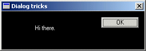

Dialog FAQ
Example: dlg_three

Now don't get me wrong, this is a Tutorial, not a Reference, but some questions people
ask SO often that I figured I might as well include them here.
Changing Colours
In general, the only reason you'd want to do this is to simulate an link on a dialog box
or some similar task, because otherwise you're probably just making your program ugly and
hard on the eyes if you go adding a bunch of colors to the dialogs, but that doesn't stop
people from doing it, and there are actually a few valid reasons, so here you go :)
Windows sends a variety of messages related to colours to your dialog procedure, and by
handling these messages you can change what colour certain things are displayed in. For
example, to change the color of the dialog box itself, you can handle
WM_CTLCOLORDLG, to change the colors for a static control you handle
WM_CTLCOLORSTATIC and so on.
First you can create a brush to use to paint the background and store it for later.
the WM_CTLCOLORDLG and related messages will get called often during the
course of your program, and if you created a new brush every time, eventually you would use
up a great deal of RAM with dead brushes. This way we have more control, and we can delete
it when the dialog is destroyed and we know we won't need it any more.
HBRUSH g_hbrBackground = CreateSolidBrush(RGB(0, 0, 0));
case WM_CTLCOLORDLG:
return (LONG)g_hbrBackground;
case WM_CTLCOLORSTATIC:
{
HDC hdcStatic = (HDC)wParam;
SetTextColor(hdcStatic, RGB(255, 255, 255));
SetBkMode(hdcStatic, TRANSPARENT);
return (LONG)g_hbrBackground;
}
break;
Notice the line that sets the background mode to transparent... if you leave this line off
the background will be filled in with the brush you specify, but when the control draws the
text it will get written over with the default background color! Setting the text drawing
mode to transparent fixes this problem. The other option would be to SetBkColor()
to the same color as our background brush, but I like this solution better.
Changing the colors on pretty much any other standard control works the same way, just look
up the WM_CTLCOLOR* messages in your Win32 reference. Note that an edit control
will send a WM_CTLCOLORSTATIC if it is read only, and
WM_CTLCOLOREDIT if it isn't.
If you have more than one static (or other) control that you want to be different colours, then
you'll need to check the ID of the control you are getting the message from and change your colours
based on that. You are passed the HWND of the control in lParam, and you can
get the ID of the control from this using GetDlgCtlrID(). Note that static controls
are all given a default ID of IDC_STATIC (-1) by the resource editor, so if you
want to be able to tell them apart you'll need to assign them new IDs.
Giving the Dialog an Icon
A fairly simple task, you just need to send WM_SETICON to your dialog. Since windows uses
two icons however, you need to call it twice, once for the small icon displayed in the corner
of the window, and once for the large one displayed when you hit Alt-Tab. You can just send
the same handle both times unless you have multi-sized icons.
To just set the default application icon, you can use the following code:
SendMessage(hwnd, WM_SETICON, ICON_SMALL, (LPARAM)LoadIcon(NULL, MAKEINTRESOURCE(IDI_APPLICATION)));
SendMessage(hwnd, WM_SETICON, ICON_BIG, (LPARAM)LoadIcon(NULL, MAKEINTRESOURCE(IDI_APPLICATION)));
When you substitute your own icon resource for the default, remember to change the
HINSTANCE parameter of LoadIcon() to your applications instance (you can get it by calling
GetModuleHandle(NULL) if you don't have it stored from WinMain()).
Why Doesn't my Combo Box Work?
An all-too-common problem is people adding a combo box to their dialog and they can't figure
out why the list doesn't show up when they run their program and click the little arrow.
This is understandable, since the solution is not very intuitive.
When you create a combo box and specify it's height, you are actually specifying the entire
height, drop-down list included, NOT the height of the control when it is collapsed which
is determined by the system based on the size of the font used.
For example, giving
the control a height of 100 pixels, the system sizes the control itself to the default
(lets say 30 in this case), and when you click on the arrow, the drop down list would be
70 pixels high, for a total of 100 pixels.
If you use the VC++ resource editor to place the combo on your dialog, you will notice you
can't size it vertically. Unless you click on the arrow in the editor, and it will then
change the focus rectangle to indicate you are sizing the dropdown list, and you can set the
height to whatever you want.
What about all the other controls!
Well I could give examples of all of the other controls, but that's what MSDN and Petzold
are for :) If you can't figure out how to use them, you probably need to re-read some parts
of this tutorial, or get a book which will explain things more thouroughly.
I'd like to give you a link to a useful page on MSDN, but Microsoft seems to be determined to prevent
me from doing so as links to individual MSDN pages either change rapidly or don't work period. Therefor
you'll probably have to figure out how to get around yourself, look around for sections like
User Interface Services, and Windows Controls, sometimes under a Platform SDK section.
MSDN - Windows Controls
|